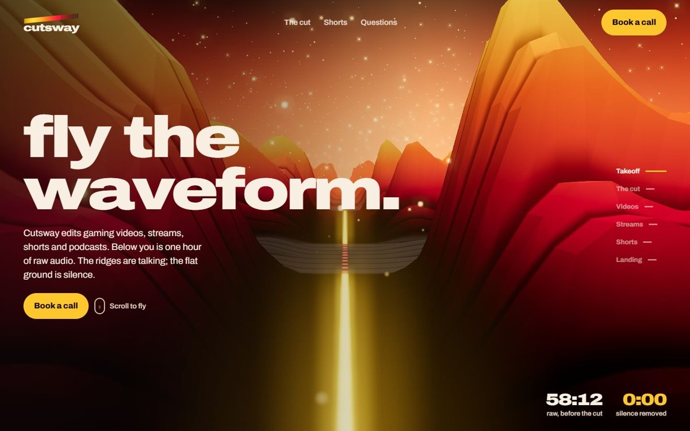
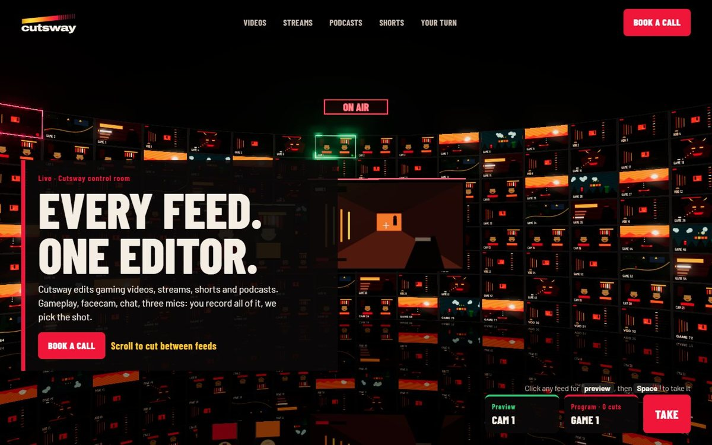
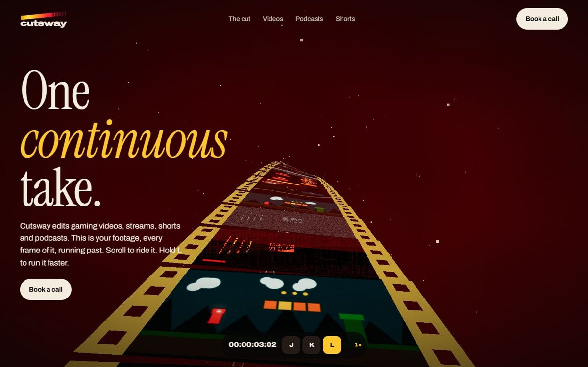
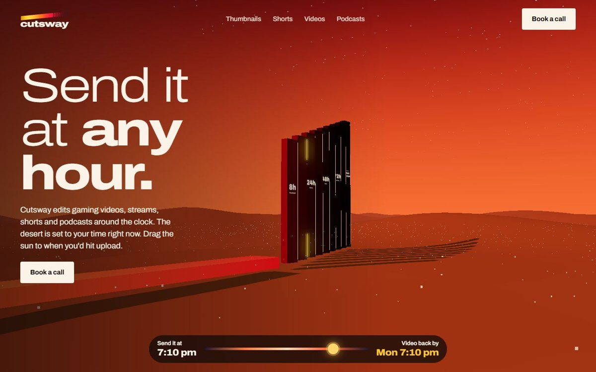
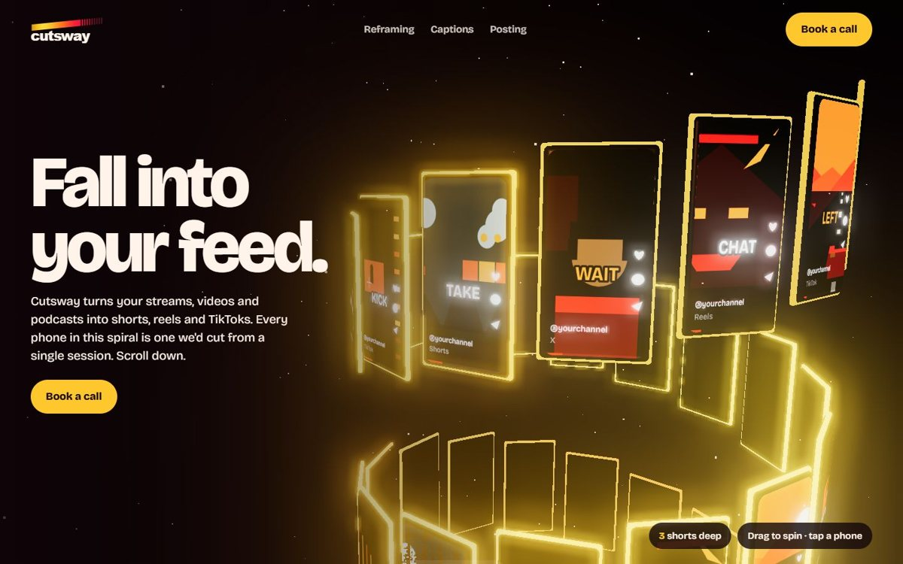

Five full 3D worlds, each a different kind of space with its own thing to do in it. All in the gold to red logo colourway. Open them through start-prototypes.bat (they need http). All earlier prototypes

Fly low over an hour of raw audio built as stepped waveform terrain at dusk. Speech forms the canyon walls; silence is grey ash ground.
Press cut (or C): the silence drops into glowing red chasms and the runtime falls. Later the loudest peaks light up gold as the shorts.
Open canyon
A broadcast control room: a curved wall of 128 live feeds, Program and Preview monitors, a mixer desk, an ON AIR sign. Chapter copy is set as lower thirds.
Click a feed to preview it, then Take (or Space) to cut it to Program. Each chapter lights only that service's feeds; shorts turn Program vertical.
Open multiview
Ride an endless film strip looping a trefoil track through the dark. Its sprocket edges run gold to red like the logo; grey dead-air frames get snipped and tumble away.
J, K and L shuttle the film like a real editor. In the shorts chapter every frame on the strip turns vertical.
Open ribbon
The logo's nine slices stand in a desert, the bar laid before them as a causeway, each stone carved with a turnaround. It opens at your real local time.
Drag the sun (or the dial) to when you'd send your files: dawn, bleached noon, ember dusk, starry night. The last stone carves when it's back.
Open monoliths
Descend a glowing tower of 110 phones playing shorts, captions word by word. Rims run gold to red to maroon down the spiral.
Drag to flick the feed with momentum. Tap a phone and it rises to you full size; double-tap for hearts.
Open feedthree.js 0.160 with bloom, one shared stage (scroll chapters, camera easing, reduced-motion and no-WebGL fallbacks). Add ?at=2.5 to any URL to open at a scroll position.
Everything on screen is drawn in code: the gameplay, feeds and shorts are samples, not real footage.
Turnaround hours (8 / 24 / 48 / 72), two revision rounds, platforms, the email address, and runtimes shown as examples.